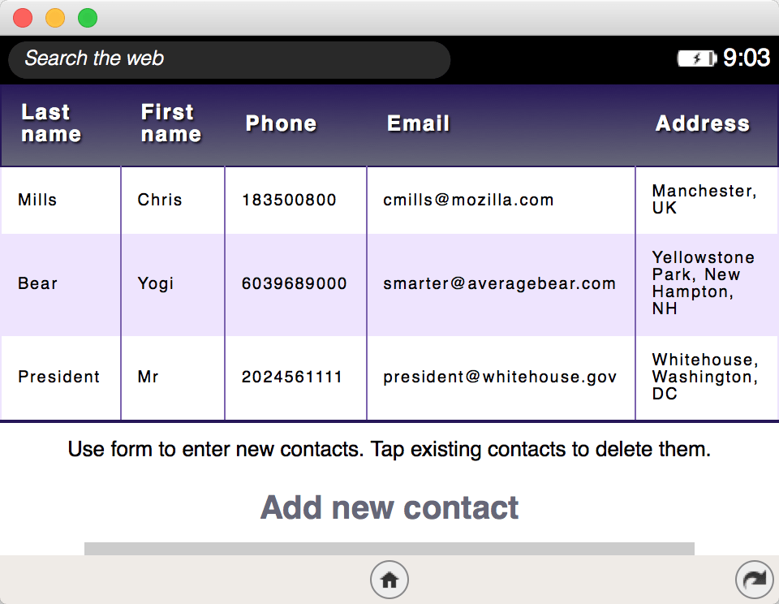
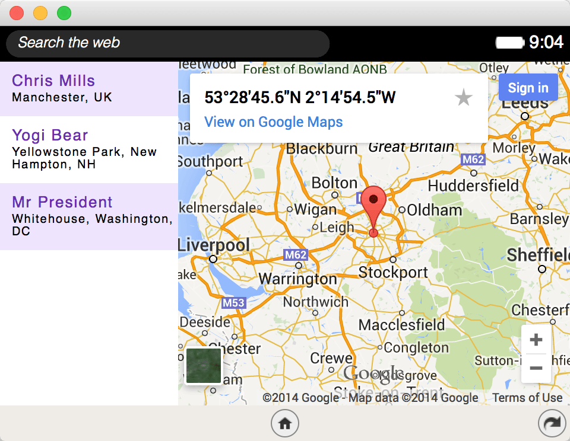

Non-standard
This feature is not on a current W3C standards track, but it is supported on the Firefox OS platform. Although implementations may change in the future and it is not supported widely across browsers, it is suitable for use in code dedicated to Firefox OS apps.
This API is available on Firefox OS for internal applications only.
The Data Store API is a Firefox OS-only API for client-side data storage. It is designed to work alongside other client-side storage mechanisms to provide data that can be read and written to by multiple apps. In this article we'll cover the basics of how to use this API to build up some examples.
Note: The Data Store API is available in Web Workers, from Firefox 32 onwards (Firefox OS 2.0; see bug 949325.)
Note: The Data Store API should not be confused with the Device Storage API, which is for accessing (reading and writing to) the device's file system(s) — internal memory, SDCards, etc. — manipulating the files contained within.
Note: Be aware that to test data store examples you need to make sure your apps are internal/certified (see above for manifest fields needed), and use App Manager or WebIDE to simulate an environment where a internal/certified app can be run. Follow these links to find out how to do this using each tool: App Manager: Debugging Certified Apps and WebIDE: Debugging Certified Apps.
Our examples
To explain the main functionality of Data Store, we have build two examples that work together (you can download these from Github using the code below, and experiment with them as you wish):
Contacts Editor: This app populates a data store called 'contacts' with some sample data, and also allows you to enter new contacts as you wish. You can also delete contacts.

Contacts Viewer: This app reads the same 'contacts' data store, but does not change the data in any way. It shows the available contacts in a list, and also plots their location on a Google map.

Setting the correct permissions in the manifest
Both apps are very similar in terms of their manifest.webapp structure, containing the usual name, description, icons, etc. What is more interesting is that each one contains a type field to specify that this app is certified and should be treated like so:
"type": "certified"
In addition, we've specified the following field to lock the apps' orientation into landscape, as things like lists and tables look bad on really narrow screen sizes:
"orientation": "landscape"
Where things differ between the two apps is the datastore permissions. The Contacts Editor owns the data store, so uses the datastores-owned field to declare this:
"datastores-owned": {
"contacts": {
"access" : "readwrite",
"description": "The contacts data store for the Data Store API Contacts Editor."
}
}
In actual fact, this is all you need to do to create the contacts data store: with this permission specified, the store is created when the device is booted up with the app present on it.
Now on to the Contacts Viewer app — this is not the data store owner, so it instead uses the datastores-access field:
"datastores-access": {
"contacts": {
"access" : "readonly",
"description": "The contacts data store owned by the Data Store API Contacts Editor, here we are just accessing it readonly to read and display the data."
}
}
Note how in this case the access is set to readonly, although this app could request readwrite if it wanted to. However, if the owner of the datastore had readonly access, this app would only have a maximum of readonly, even if it specified readwrite.
Privileged homescreen apps
As of Firefox 42, the Data Store API is available to privileged homescreen apps. This is so that 3rd party homescreen apps can access the same data stores as the default homescreen app and provide equivalent functionality (see bug 1181329 for feature implementation details.) This means you need to include the following type field in such apps:
"type": "privileged"
You need to also include the datastores-access field so that your 3rd party homescreen can access the same datastores as the default homescreen (see the homescreen source code):
"datastores-access": {
"bookmarks_store": {
"readonly": true,
"description": "View bookmarks."
},
"places": {
"readonly": true,
"description": "View data about browsing history."
},
"icons": {
"readonly": true,
"description": "Retrieve cached website icons."
}
},
Finally, you need to have the following role field set:
"role": "homescreen",
Initializing the data store
Now let's study the Contacts Editor app in detail, to see how it works.
As we said earlier, the contacts data store has already been created by the inclusion of the datastores-owned field in the manifest. If you don't see any data appearing in the app, then try restarting the simulator/device you are using and trying again. The data store is only created when the app is booted up with the app present on it, so this is how you emulate that.
To access the data store in the first place, you need to use the navigator.getDataStores method, which returns a promise. The promise resolves with an array of all the data stores on the device that have the name provided as the method's argument, in this case contacts. Since there is usually only one datastore with each name, you can access this specific data store inside the promise with contacts[0]. This is a DataStore object that can be used to manipulate the Data Store we want to work with.
The next thing we do is to use the DataStore.getLength method immediately inside the promise to return another promise. This promise resolves with a double indicating the number of records in the data store. We use this to check whether the data store has no records in it. If so, we loop through an array of default records called contactsInit and add each one to the data store using the addContact() function.
If the store has got some records in it already we don't need to initialize the data store like this, and instead create a cursor using the DataStore.sync method then run through reinitializing the data display using the runNextTask() function.
navigator.getDataStores('contacts').then(function(stores) {
stores[0].getLength().then(function(storeLength) {
if(storeLength == 0) {
for(i = 0; i < contactsInit.length; i++) {
addContact(stores[0],contactsInit[i]);
};
} else {
var cursor = stores[0].sync();
runNextTask(cursor);
}
});
});
Adding contacts to the data store
In the addContact() function, we use the DataStore.add method to add the current data object (obj) to the data store. This method also returns a promise, which resolves with the id of the newly added record. When this occurs we create a table row, populate it with that record's data, and add it to the data table in the app's UI so we can see the change visually too.
The last thing we do here is add the id of the current record to the table row inside a data-id attribute, and attach an onclick handler to the table row so that when a row is tapped in the UI the deleteItem() function is invoked, which handles deleting both the row from the UI, and the corresponding record from the data store.
function addContact(store, obj) {
store.add(obj).then(function(id) {
var tableRow = document.createElement('tr');
tableRow.innerHTML = '<td>' + obj.lName +
'</td><td>' + obj.fName +
'</td><td>' + obj.phone +
'</td><td>' + obj.email +
'</td><td>' + obj.address + '</td>';
tBody.appendChild(tableRow);
var myId = id;
console.log(myId);
tableRow.setAttribute('data-id', myId);
tableRow.onclick = function(event) {
deleteItem(event);
}
});
}
Syncing data store changes
To sync the data an app has access to when the data store is changed, you generally use the DataStore.sync method, which creates a cursor you can use to go through each task that's happened to the data store since it was created — such as adding records, updating, deleting, etc.
Data Store also has the DataStore.onchange event handler available, which you can use to fire a sync operation whenever the data store is changed (and whatever else you want.) We'll see that in action later, when we look at the Contacts Viewer app. In this case, we only want to fire the sync operation whenever the app starts up and the data store isn't empty, in which case we just want to go through each item added to the store and display them in our contacts table.
Earlier on, we invoked the runNextTask() function and passed it the cursor. To deal with the first task, we run the DataStoreCursor.next method, which returns a promise resolving with a DataStoreTask object representing the current task we want to deal with — in this case, the task of adding the first record to the data store.
function runNextTask(cursor) {
cursor.next().then(function(task) {
manageTask(cursor, task);
});
}
We then invoke the manageTask() function, passing it the current task and the cursor. This runs through each task in the cursor, checking each one and then running the next task by recursively calling runNextTask() again.
If the DataStoreTask.operation type is done, we've reached the end of the cursor so we stop cycling through. If the task type is add, we run the displayExisting() function, passing it the DataStoreTask.id and DataStoreTask.data to use for redisplaying the data. We don't care about other task types for this particular app.
function manageTask(cursor, task) {
if (task.operation == 'done') {
// Finished adding contacts!
return;
}
if (task.operation == 'add') {
// Add the contacts that are different to how it was before
displayExisting(task.id, task.data);
}
runNextTask(cursor);
}
If you look at the displayExisting() function in the code, you'll notice that it is very similar to the addContact() function we discussed earlier, except that in this case we don't have to access the data store — we've already got the data we want to display from the task item.
Note: The DataStore.sync method can optionally be passed a revisionId, which can be grabbed from DataStore.revisionId — this id represents the state of the database at that point, in the same way as different revisions in a versioning system. If you want to sync all changes from a certain point in the data store history, pass it the revisionId from that point. If you don't pass it a revisionId, it just syncs all changes from the very beginning of the data store's history.
Adding user data to the datastore
When a user submits the form, the addUserData() function is run to add the contact data to the data store and display it in the table. After a bit of (very basic!) error handling, we create a tempDataobject to insert into the data store, clear the form fields ready for the next contact to be entered, and then call the contacts data store and invoke the addContact() function again, as before:
function addUserData(event) {
event.preventDefault();
if(lNameInput.value == '' || fNameInput.value == '' || phoneInput.value == '' || emailInput.value == '' || addressInput.value == '' || latInput.value == '' || longInput.value == '') {
alert('Please fill in all fields');
return;
}
var tempData = { lName:lNameInput.value, fName:fNameInput.value, phone:phoneInput.value , email:emailInput.value, address:addressInput.value, lat:latInput.value, long:longInput.value }
lNameInput.value = '';
fNameInput.value = '';
phoneInput.value = '';
emailInput.value = '';
addressInput.value = '';
latInput.value = '';
longInput.value = '';
navigator.getDataStores('contacts').then(function(stores) {
addContact(stores[0],tempData);
});
}
form.addEventListener('submit',addUserData,false);
Removing data from the data store
The only function we've not discussed so far from Contacts Editor is deleteItem(), invoked when a row is clicked on. This quite simply:
- Grabs the
idfrom the table row'sdata-idattribute, making sure to turn it into a number so data store can understand it as anid. - Gets the data store and runs the
DataStore.removemethod, passing it theidwe grabbed earlier to remove the correct record from the store. - Deletes the actual table row for the display table. That horrible line of code is correct: in JavaScript, there is no 'removeSelf' DOM method, so you have to ask the parent node to delete the current child.
function deleteItem(event) {
var id = Number(event.target.parentNode.getAttribute('data-id'));
navigator.getDataStores('contacts').then(function(stores) {
stores[0].remove(id).then(function(success) {
if (success) {
console.log('The object has been deleted.');
} else {
console.log('The object has failed to be deleted.');
};
});
});
event.target.parentNode.parentNode.removeChild(event.target.parentNode);
};
The viewer app: syncing data from the editor app
We're not going to go through every part of the Contacts Viewer application, because a lot of the code is very similar to what we've already seen. One part that is different is that when the app is first initialized, we not only run the syncing mechanism (just like we did in Contact Editor), but we also include that same code again, wrapped in a DataStore.onchange event handler:
stores[0].onchange = function() {
contactList.innerHTML = '';
var cursor = stores[0].sync();
runNextTask(cursor);
}
This is so that, if the Contacts Editor app makes a change to the contacts data store, we can sync the display in this app.